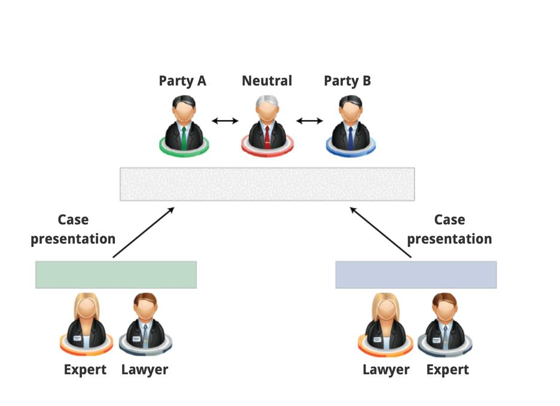

Mini-trial 微庭审/小型庭审
ADR is a group of procedures, which includes negotiation, mediation, conciliation, Mini-trial and so on. (ADR的实质是一程序群，主要类型包括有协商、调解、调停、裁决、小型庭审等。)
Questions: select the answer you consider to be correct.
Q1:which of the following is a key characteristic of the Mini-Trial? (以下哪项是小型庭审的关键特征？)
(1)The use of the same procedure as a full trial. （采用与完整审判相同的程序）
(2)The power of the neutral party to impose a binding decision on the parties. (中立方有对当事人有施加约束力的决定的权力)
(3)The presentation of evidence is made to the parties with the power to settle the dispute. （向有权解决争议的各方提交证据）
(4)None of these. （以上都不是）
A1: The correct answer is ‘the presentation of evidence is made to the parties with the power to settle the dispute.’
(A key characteristic of the Mini-Trial is its ability to provide information directly to the parties so that they can evaluate relative strengths and weaknesses of each side and enter into well-informed, focused settlement discussions. The presence of the parties (senior executives) ‘with the power and desire to settle the dispute’ is therefore, by definition, essential to its success.) (小型庭审的一个关键特点是它能够直接向当事人提供资料，以便他们能够评判每一方的相对优势和劣势，并进入消息灵通的且注重解决方案的讨论。因此，根据定义，“有权力和愿望却解决争议”的双方（高级管理人员）的存在对小型庭审的成功至关重要。
Q2: which disputes are most suitable for the use of a Mini-Trial? (哪些争议最适合采用小型庭审？)
（1）Technical disputes which require the use of specialised experts. (需要聘请专门专家的技术争议)
（2）Personal disputes with a high degree of animosity between the parties. （当事人之间存在高度敌意的个人争议）
（3）Complex legal or factual disputes which often lead to protracted litigation. （复杂的法律或事实纠纷，往往导致旷日持久的诉讼）
（4）None of these. （以上都不是）
A2: the correct answer is ‘Complex legal or factual disputes which often lead to protracted litigation.’
(The Mini-Trial has been shown to be an appropriate mechanism in cases involving complex questions of law and fact such as patent law, product liability, unfair competition, antitrust and contract cases which often lead to protracted and very costly litigation.)(小型庭审已被证明是涉及复杂法律和事实问题的案件的适当机制，例如专利法，产品责任，不公平竞争，反托拉斯和合同案件，这些案件往往导致旷日持久和代价高昂的诉讼。)
Q3: At what stage of a dispute are Mini-Trials typically conducted? (小型庭审通常在争议的哪个阶段进行？)
(1）Immediately after the dispute arises. （立即在争议发生之后）
（2）After pre-trial discovery is under way. （审前证据开示进行中之后）
（3）Immediately before a court hearing. （紧接开庭审理前）
（4）None of these. （以上都不是）
A3:the correct answer is ‘after pre-trial discovery is under way.’
(The Mini-Trial’s timing can often affect its chances of success. Mini-Trials are typically conducted after pre-trail discovery is under way because the issues need to be sufficiently developed in order for the hearing to be meaningful.) (小型庭审的时机往往会影响其成功的几率。小型庭审通常是在审前证据开示进行中之后进行的，因为问题需要得到充分的发展从而使听证会有意义)
Congratulations!
You have achieved a basic understanding of the Mini-Trial mechanism. (你已经对小型庭审机制有了基本的了解)
You have learned the following:
[1]Mini-trial is a useful technique because the presentation of the evidence is not made to a person with the authority to issue a binding judgement, but to the parties themselves. (小型庭审是一种有用的技术，因为证据不是提交给有权作出有约束力判决的人，而是提交给当事人自己)
[2]The mini-trial has been successful in cases such as patent law, product liability, unfair competition, antitrust and contract cases which often lead to protracted and very costly litigation. （小型庭审在专利法，产品责任，不公平竞争，反托拉斯法和合同案件中取得了成功，这些案件往往导致旷日持久和代价高昂的诉讼）
[3]Mini-trials are usually conducted after pre-trial discovery has started; （小型庭审通常在审前证据开示开始之后进行）
[4]The ‘parties can resolve a dispute themselves in an informal proceeding’ （当事人可以在非正式程序中自行解决争议）
[5]If the parties cannot reach an agreement the neutral advisor provides an incentive to settle by indicating what a likely trial outcome would be. （如果双方不能达成协议，中立顾问通过指出可能的审判结果来激励和解）
What is the aim of this module?
Understanding how the process of Mini-Trial works and what the outcomes of this mechanism are.
The ‘first Mini-Trial is said to have been conducted in the US in 1977. It was invoked after the instigation of litigation alleging patent infringements.’ (“据说第一个小型庭审是 1977 年在美国进行的。在指控专利侵权的诉讼发起后，它被援引。”)
During the Mini-Trial the parties reached a settlement which was structured on the basis of a future business relationship which would have been beyond the scope of a trial judge’. （在小型庭审期间，双方达成了一项解决方案，该方案是基于未来的业务关系，而这超出了初审法官的范围。)
Despite using the word trial, a Mini-Trial ‘is not really a trial at all but a carefully structured and refined method that enables the parties in a dispute to settle’ the core issues. This emphasis on identifying the dispute’s substance rather than being hindered by procedural issues is a defining attribute of the Mini-Trial. (尽管使用了“审判”一词，但“小型庭审”根本不是真正的审判，而是一种精心设计和完善的方法，使争议双方能够解决“核心问题”。它强调，确定争议的实质，而不是受到程序问题的阻碍，是小型庭审的一个决定性特征。)
Following a brief period of discovery, it ‘consists of a short hearing (not more two or three days) and a period of negotiation (not more than fifteen days). The procedures followed for the Mini-Trial hearing are devised by the parties.’ (在一段短暂的发现期之后，它包括一个简短的听证会（不超过两三天）和一个谈判期（不超过十五天）。小型庭审遵循的程序由当事人各方制定。)
The key characteristic of the Mini-Trial is ‘its ability to provide information directly to the parties so that they can evaluate relative strengths and weaknesses of each side and enter into well-informed, focused settlement discussions. The presence of the parties (senior executives)’ with the power and desire to settle the dispute is therefore, by definition, essential to its success.’(小型庭审的关键特征是：“它能够直接向当事人提供信息，以便他们能够评估各方的相对优势和劣势，并进行知情，有针对性的和解讨论。因此，根据定义，各方当事人（高级管理人员）具有解决争议的权力和愿望的存在，对其成功至关重要。”) The Mini-Trial has been shown to be ‘an appropriate mechanism’ in cases involving complex questions of law and facts such as patent law, product liability, unfair competition, antitrust and contract cases which often lead to protracted and very costly litigation. (小型庭审已被证明是涉及复杂法律和事实问题的案件的“适当机制”，如专利法，产品责任，不公平竞争，反托拉斯和合同案件，这些案件往往导致旷日持久和非常昂贵的诉讼。)
While the underlying objective of the Mini-Trial is ‘to effect a speedy, cost-effective resolution of a dispute and promote dialogue on the relative strengths and weaknesses of each party’s case’, its timing can often affect its chances of success. (虽然小型庭审的根本目标是“迅速，经济高效地解决争议，并促进就各方案件的相对优缺点进行对话”，但其时机往往会影响其成功的机会。)
Mini-Trials are ‘typically conducted after pre-trial discovery is under way because the issues need to be sufficiently developed in order for the hearing to be meaningful. In determining when to propose a Mini-Trial parties should base their decision on a cost/benefit analysis of the value of obtaining additional information’. (小型庭审，“通常是在审前证据开示(pre-trial discovery)进行中（is under way）进行的，因为问题需要充分发展才能使听证会有意义。” （ 在决定何时提出小型审判，各方应该基于对获得额外信息价值的成本/收益分析作出决定。）
Ultimately, in Mini-Trial the ‘parties can resolve a dispute themselves in an informal proceeding in which lawyers and experts for each side give summary presentations of their best cases to them and a jointly selected neutral advisor. If the parties cannot reach an agreement the neutral advisor provides an incentive to settle by indicating what a likely trial outcome would be’. (最终，在小型庭审中，当事人各方可以通过非正式程序自行解决争议，在非正式程序中，双方各方的律师和专家向他们和共同选择的中立顾问总结最好的案例。如果双方无法达成协议，中立顾问会通过表明可能的审判结果来提供和解的激励。)
The reason the Mini-Trial ‘is such a useful technique is that the presentation of the evidence is not made to a person with the authority to issue a binding judgment, but to the parties themselves’. (小型庭审之所以“是一种如此有用的技术，是因为证据不是向有权发布具有约束力的判决的人提出的，而是向当事人本身提出的”)
In a Mini-Trial the parties can resolve a dispute themselves in an informal proceeding in which lawyers and experts for each side give summary presentations of their best cases to them and a jointly selected neutral advisor. (在小型庭审中，双方可以在非正式程序中自行解决争议，双方各自的律师和专家向他们和联合选出的中立顾问总结其最佳案例。)
The reason why Mini-Trial is a very successful procedure is because the presentation of the evidence is made to the parties themselves and not to a person with the authority to issue a binding award. (小型庭审之所以是一个非常成功的程序，是因为证据是向当事人自己提出的，而不是向有权作出有约束力裁决的人提出的)。